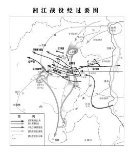
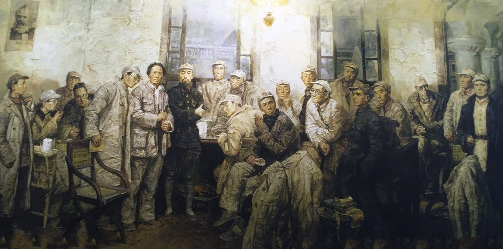
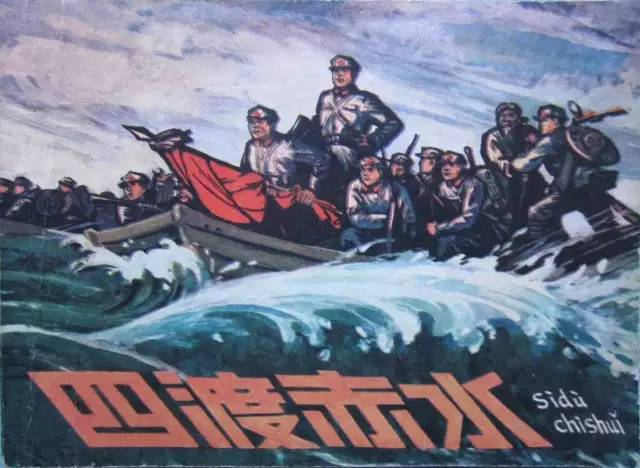
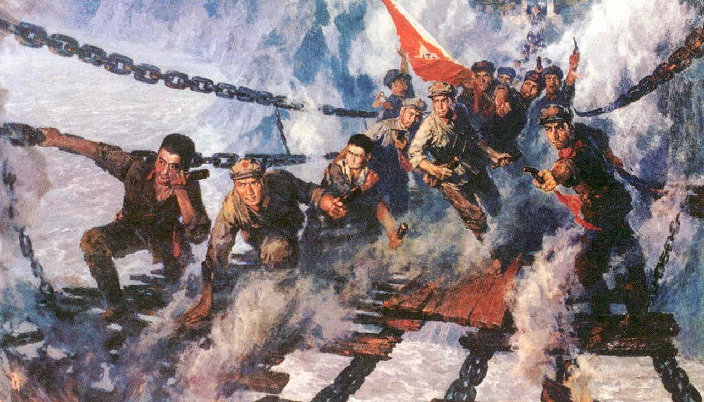
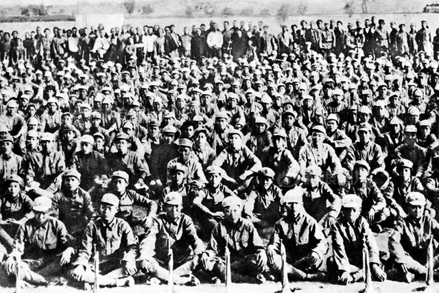
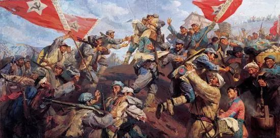

1934年10月
中央红军出发
江西瑞金，8.6万红军踏上漫漫征途。
第五次反"围剿"失利后，中央红军被迫实行战略转移。出发地包括江西瑞金、于都等地，红军战士告别苏区群众，开始了震惊世界的长征。
1934年11月—12月
湘江战役
长征中最惨烈的一战，红军由8.6万锐减至3万余人。
红军在湘江两岸与国民党军血战，付出巨大代价突破第四道封锁线。此役后，红军将士对"左"倾错误路线的不满达到顶点，为遵义会议的召开埋下伏笔。

1935年1月
遵义会议
生死攸关的转折点，确立了毛泽东在党中央的领导地位。
会议纠正了博古、李德在军事上的"左"倾错误，事实上确立了以毛泽东为核心的党中央的正确领导，是中国共产党历史上一个生死攸关的转折点。

1935年1月—3月
四渡赤水
毛泽东军事指挥的得意之笔，红军在川黔滇边界机动灵活。
红军在赤水河两岸四次渡河，声东击西、迂回穿插，摆脱了几十万国民党军的围追堵截，创造了以少胜多的军事奇迹。

1935年5月
飞夺泸定桥
22名勇士冒着枪林弹雨攀爬铁索，夺取泸定桥。
红军先头部队一昼夜奔袭240里，22名突击队员在铁索上匍匐前进，冲破敌军火力封锁，为红军主力打开北上通道。

1935年6月—8月
翻雪山 · 过草地
夹金山、松潘草地，自然极限下的生死考验。
红军翻越终年积雪的夹金山，穿越人迹罕至、沼泽密布的松潘草地。缺粮、缺氧、严寒，无数战士倒在了雪山草地上，"金色的鱼钩""七根火柴"的故事就发生在这里。

1935年10月
中央红军到达陕北
吴起镇会师，中央红军长征胜利结束。
中央红军历经二万五千里，纵横11个省，翻越18座大山，跨过24条大河，于1935年10月到达陕北吴起镇，与陕北红军会师。

1936年10月
三大主力会师
甘肃会宁，红一、二、四方面军胜利会师，长征全面胜利。
1936年10月，红一、红二、红四方面军在甘肃会宁、静宁将台堡会师，标志着红军长征的全面胜利。长征是宣言书，是宣传队，是播种机。
